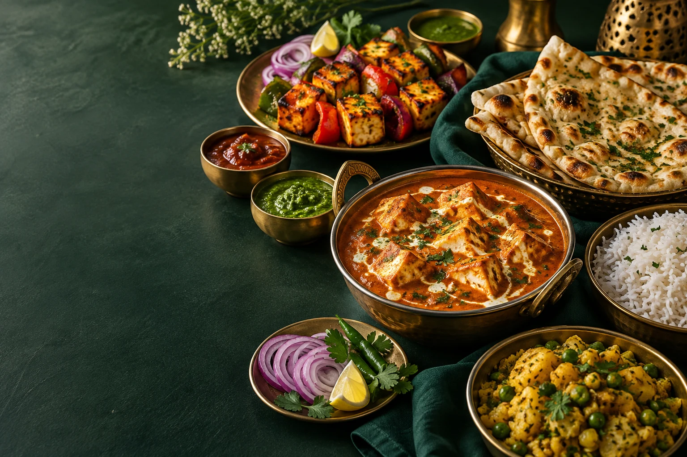

A LITTLE INDIA. RIGHT HERE IN QATAR.
Authentic Indian
Flavours.
Purely Vegetarian.
Experience the taste of India in Qatar with freshly prepared vegetarian dishes made with authentic spices, traditional recipes and quality ingredients.
PURE VEG100%FULL OF FLAVOUR
♧ 100% Pure Vegetarian✧ Authentic Indian Recipes❋ Fresh Ingredients♡ Made With Love